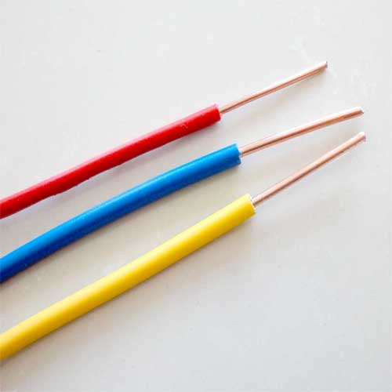
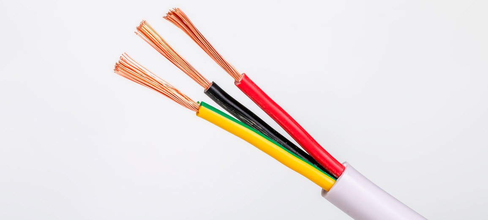

Os cuidados com o projeto elétrico são requisito fundamental em qualquer construção de obra, elaboração de projeto arquitetônico ou até mesmo se você for fazer uma reforma. Mas a parte de fiação elétrica pode ser um grande mistério para muita gente, não é mesmo?
Por isso, para desmistificar esse universo emaranhado, vamos explicar sobre os principais tipos de fios, cabos e bitolas, bem como suas aplicações nas instalações elétricas.
A escolha correta dessas peças é essencial para evitar problemas como queda de energia, curto-circuito e inclusive incêndio. Então, continue a leitura e entenda melhor como funciona a fiação elétrica!
Os componentes da fiação elétrica
Para entender sobre fiação elétrica, é preciso antes de tudo conhecer os seus componentes.
Os fios e os cabos, também chamados de condutores elétricos, são os responsáveis pela condução e distribuição de energia elétrica. Mas, apesar de ter a mesma finalidade, são coisas diferentes.
Os fios são formados por apenas um filamento metálico e rígido. Já os cabos são compostos por vários fios torcidos e entrelaçados e, além disso, são mais flexíveis.
Outro ponto de atenção na fiação elétrica são as bitolas. Chamadas tecnicamente de seções nominais, elas se referem ao diâmetro de um fio elétrico, ou seja, a espessura do fio.
Se utilizada uma bitola inferior à ideal, o sistema elétrico pode ficar sobrecarregado. Isso pode acarretar o aquecimento de fios e cabos e, consequentemente, um incêndio.
Tipos de fios, cabos e bitolas
Fios sólidos

Feito de cobre e PVC para isolamento (que suporta uma tensão elétrica de até 750 V), o fio sólido é indicado para instalações com baixa intensidade de corrente. Sendo assim, é mais utilizado em residências ou em instalações industriais simples.
Mas é importante ressaltar que, por ser rígido, o fio não pode ser dobrado, pois isso pode quebrar a parte metálica, causando a interrupção de energia elétrica.
Cabos flexíveis e rígidos
Os cabos, da mesma forma que os fios, são feitos de fios de cobre e têm isolamento em PVC. Eles são os mais utilizados em vários tipos de instalações – desde residências, comércios até indústrias. Podem ser usados, por exemplo, em:
Quadro de entrada de edifícios;
Bombas de piscinas;
Fornos elétricos de restaurantes;
Máquinas industriais.
Cabos PP e paralelos
Esses dois tipos de cabo não são muito utilizados em instalações elétricas de imóveis.

Os cabos PP são feitos com fios de cobre, possuem duas camadas de isolamento e apresentam alto nível de flexibilidade, resistência e segurança.
Geralmente, é usado para ligações de eletrodomésticos (como aspiradores) e outros equipamentos (como furadeiras). Eles também costumam ser utilizados nos projetos de decoração em luminárias pendentes.
Os cabos paralelos, que também são flexíveis e constituídos por fios de cobre, são mais indicados para pequenas instalações, como aparelhos portáteis, abajures e lustres.
Agora que você já conhece alguns detalhes técnicos importantes sobre fiação elétrica, pode escolher corretamente fios, cabos e bitolas para suas instalações.